Since my flight was overbooked, Emirates put me up in a hotel for the night. We initially were supposed to stay at the fanciest hotel in Nairobi, but it was full. So we stayed at the Stanley Hotel instead, which is an impressive hotel. The Stanley was made famous during Nairobi's days as an important city for the building of the railroad from Mombasa to Uganda. The Stanley has had many famous international visitors, from Ernest Hemingway to President Clinton.
Nairobi grew entirely from the railroad building days and its days as the capital for the British East African colonies. Now it is the largest city in Kenya, and a major international hub. In fact, Nairobi is one of the fastest growing cities in Africa. Wikipedia's entry on Nairobi is a good source of basic information on Nairobi. The photo of the Nairobi skyline at Wikipedia is telling for many Americans, since it shows many tall buildings which most Americans don't associate with Africa.
In 1998, the US Embassy in Nairobi was bombed by Al-Qaida. Other terrorist attacks have occurred in Kenya, most notably an attack on a hotel and an airplane. Nairobi is also home to Kibera, the "Worst slum in Africa," to quote the television news channel broadcast in rural Kenya. The slum was featured in The Constant Gardener, and has been said to be the poorest and worst slum in all of Africa by many international agencies. It is home to somewhere between half a million and one million people. Most of the NGO workers I met in Nairobi work in Kibera.
Nairobi used to be a very dangerous place, from what Kenyans told me of it. These days, the city is much safer and less overtly dangerous, though there are many, many places I would not venture at night. And Nairobi is still regarded as less safe than other cities. Dakar, it is not.
Since I was in Nairobi for a day, and had just seen Stalone the previous evening, I decided to call him up and see if he was still in town. He was, so he came by my hotel room and we had breakfast, lunch and dinner (thanks Emirates!). Between meals, we wandered around the city and talked about how crazy it was that such a hotel existed with such dire poverty not very far away.
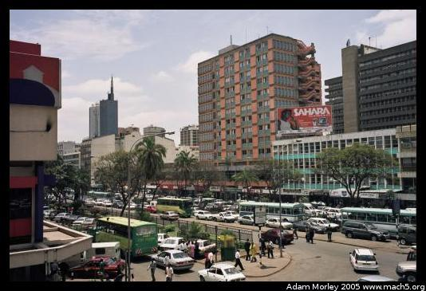 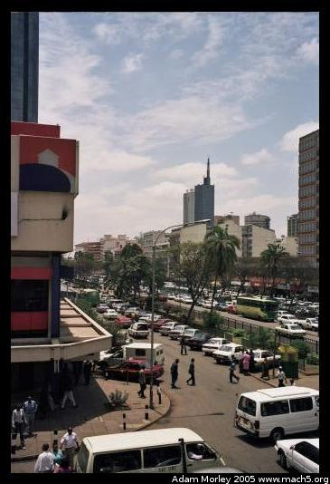
One of Nairobi's main streets from the second floor window of Stalone's church in Nairobi.
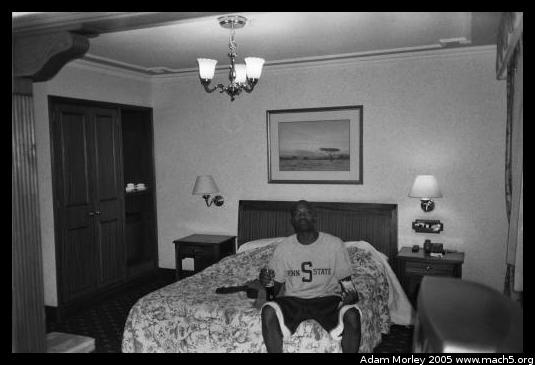 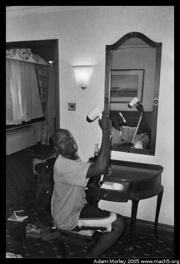 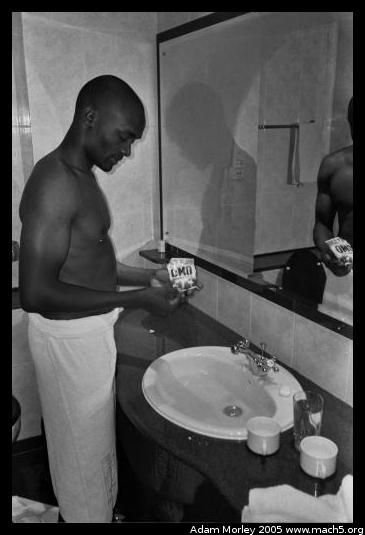Stalone in the Stanley, drying his non-existent hair and doing some laundry. We didn't know what to do. There was no bucket, so we used the sink.
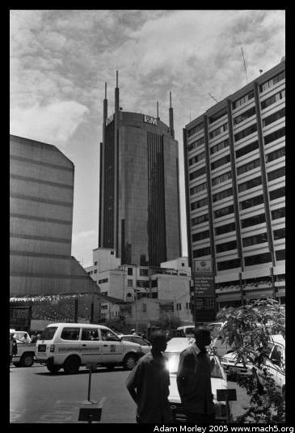 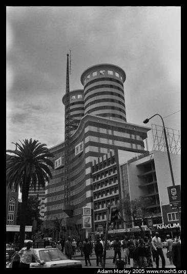I took a walk, and saw some buildings in Nairobi
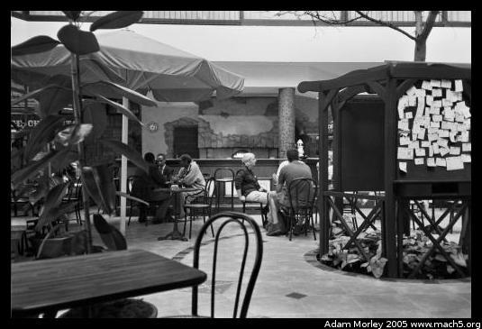The Thorn Tree Cafe, quite popular among tourists and the more wealthy Kenyans. Home of the $12 breakfast. It really is quite lovely.
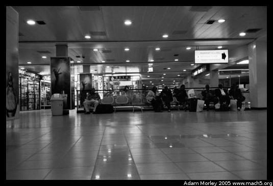 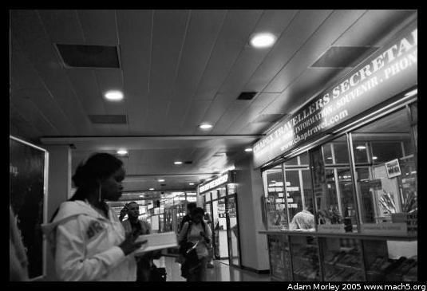 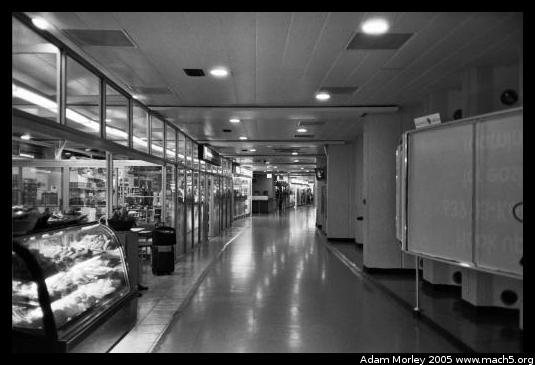After spending a day doing not much, I returned to Jomo Kenyatta International Airport and boarded my flight to the UAE.
Adam can be reached at adam dot morley at gmail dot com